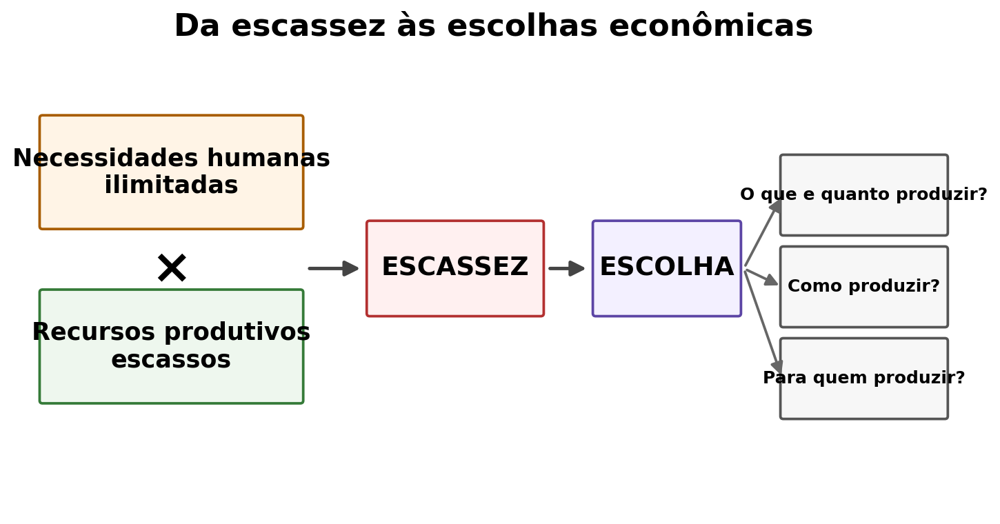
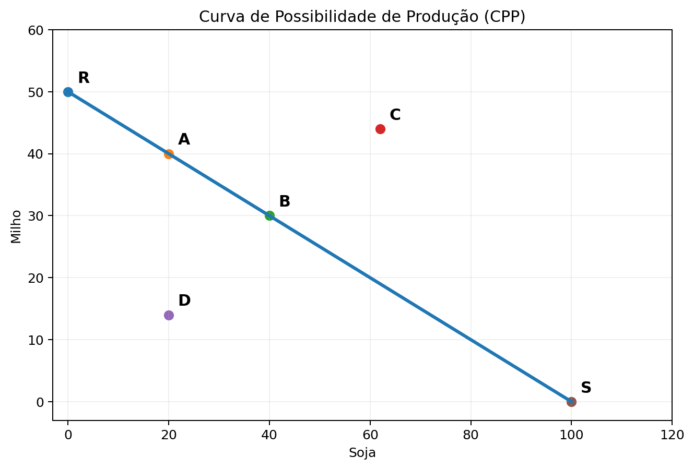
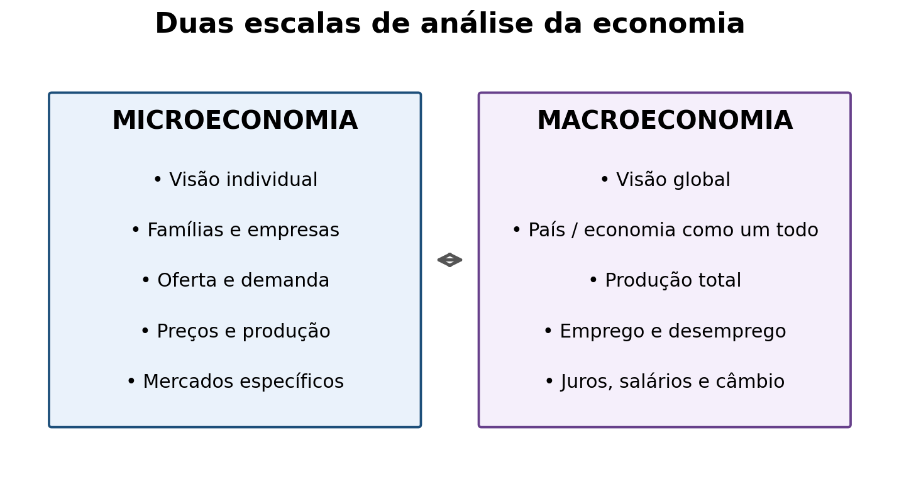
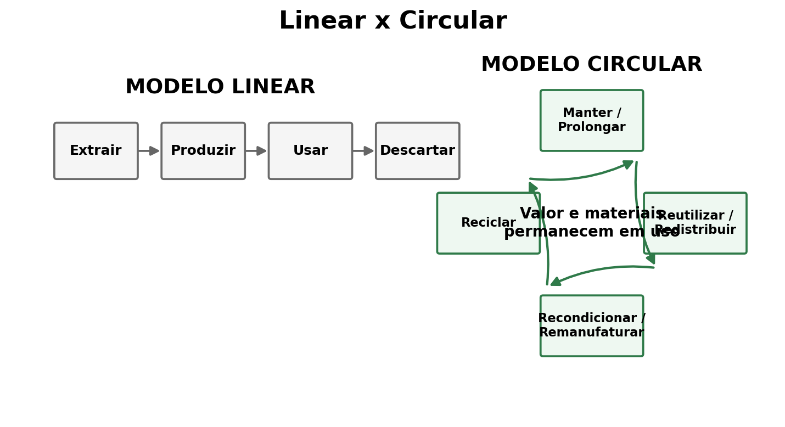
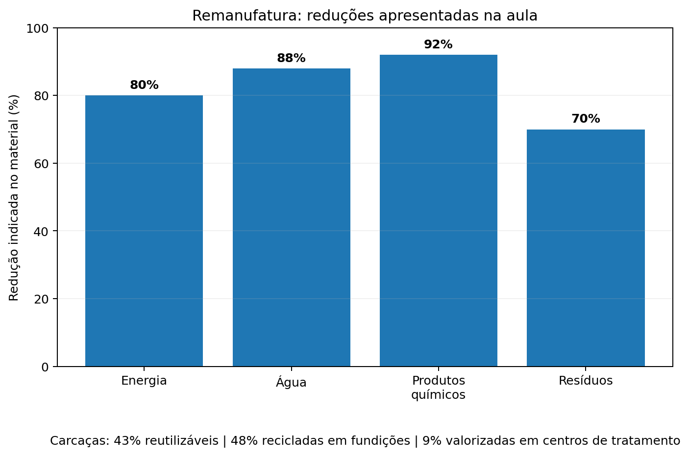
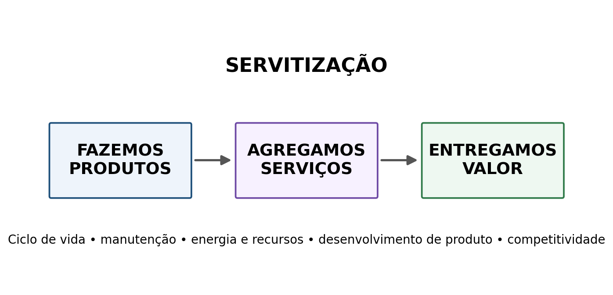
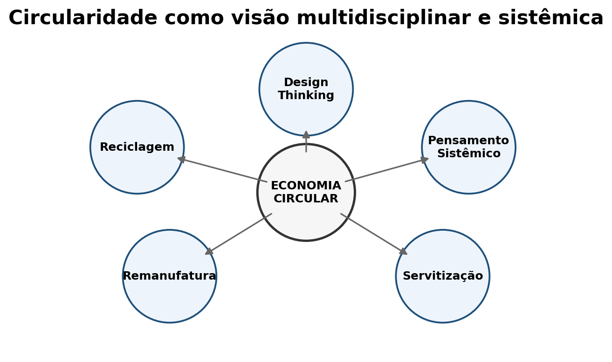

Visão geral
O material parte do problema econômico central - necessidades amplas diante de recursos produtivos escassos - e avança para formas de organização da produção, análise micro e macroeconômica e, depois, para uma lógica de circularidade que busca prolongar a vida de produtos e materiais.
1. Escassez e escolhas econômicas

O problema econômico
A economia estuda como utilizar recursos produtivos escassos para produzir bens e serviços destinados a satisfazer necessidades individuais e coletivas.
- Recursos limitados: não são suficientes para produzir tudo o que se deseja.
- Utilidade: grau de satisfação associado ao uso de um bem ou serviço.
- Decisão: a escassez obriga a escolher prioridades.
2. Quatro perguntas e dois sistemas econômicos
Perguntas fundamentais
Mercado x planejamento central
Economias de mercado: os problemas são resolvidos pelo mecanismo de preços, por meio da oferta e da demanda.
Economias centralizadas: as decisões são tomadas por um órgão central de planejamento, considerando recursos disponíveis e necessidades do país.
3. Curva de Possibilidade de Produção

Capacidade produtiva e mudança da fronteira
O material usa soja e milho para representar combinações produtivas. Também mostra duas mudanças possíveis:
- Retração: deslocamento da curva para dentro.
- Crescimento e/ou alteração tecnológica: deslocamento para fora.
A interpretação econômica dos pontos sobre, dentro e fora da fronteira é uma explicação didática adicional; o posicionamento dos pontos A, B, C, D, R e S vem do gráfico da aula.
4. Microeconomia e Macroeconomia

Duas perspectivas complementares
Microeconomia: perspectiva individual, com foco em consumidores, famílias, empresas, oferta, demanda, preços, produção e mercados específicos.
Macroeconomia: perspectiva global, analisando a economia do país, produção total, nível geral de preços, emprego e desemprego, taxas de juros, salários e câmbio.
5. Da economia linear à Economia Circular

Fim de vida deixa de ser o centro
No material, Economia Circular é apresentada como um sistema baseado em modelos de negócio no qual o conceito de fim do ciclo de vida é substituído por desenho, revisão, reutilização, reciclagem e recuperação, nos processos de produção, distribuição e consumo.
Finalidade: desenvolvimento sustentável nas dimensões econômica, social e ambiental.
Ideia-chave: prolongar a vida de produtos e materiais para utilizar menos recursos.
6. Estratégias de circularidade e remanufatura
Quatro estratégias destacadas
O material também enfatiza que a remanufatura pode reduzir fortemente o consumo de recursos e a geração de resíduos.

7. Servitização, margem, giro e visão sistêmica

Negócios sustentáveis por serviços
A aula relaciona servitização com ciclo de vida de produtos, emprego, produção, gestão de energia e recursos, manutenção, desenvolvimento de produtos, marco legal e competitividade.
No material, a segunda expressão aparece como uma analogia macroeconômica: M = meios de pagamento; v = velocidade.

Pensamento sistêmico e Design Thinking
O material associa a circularidade a uma visão multidisciplinar, ao pensamento sistêmico, ao Design Thinking/Design Based Research, à estratégia e à operação, à integração de serviços e à manufatura aditiva.
Mensagem da aula: circularidade não é só reciclagem; envolve desenho, operação, manutenção, modelo de negócio e coordenação entre partes do sistema.
8. Casos e exemplos citados na aula
Grande parte dos resíduos de móveis termina em incineração ou aterros; o material destaca o potencial de reutilização.
Exemplo de uso de plástico reciclado no veículo.
Exemplo de sistema de retorno com incentivo financeiro.
Caso empresarial apresentado como referência em circularidade e remanufatura.
Exemplo ligado à perecibilidade e ao aproveitamento de alimentos.
Casos relacionados a remanufatura, reaproveitamento de materiais e circularidade.
Projeto citado no contexto de gestão de resíduos.
Série de referências nacionais mostradas no material sobre circularidade.
O material ressalta a elevada demanda de combustíveis fósseis e produtos químicos na fabricação de PCs.
O que precisa ficar
Escassez
Recursos limitados impõem escolhas sobre produção e distribuição.
Escalas
Microeconomia olha agentes e mercados; macroeconomia olha o conjunto da economia.
Circularidade
Prolongar ciclos de vida exige pensar produto, serviço, manutenção, materiais e sistema.
Questões de estudo e avaliação
As questões 1–14 são diretamente respondíveis a partir do material. As questões com borda laranja são de aplicação ou integração.